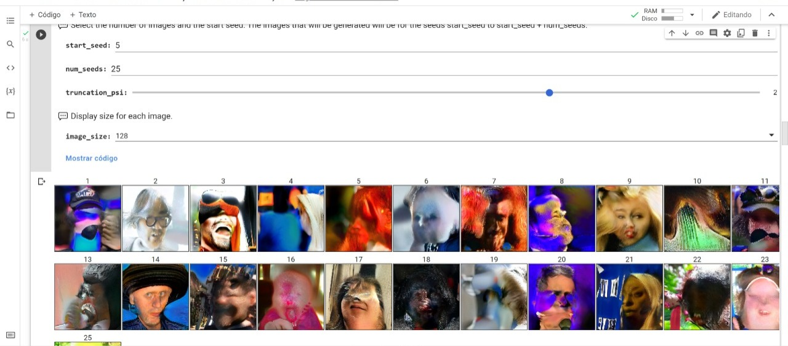

Week 2. Atlas of Weak Signals.
This second week we had the Atlas of Weak Signals course, which analyzes emerging issues that can be assessed and in which way they can be approached. This included a trip to Collserolla.
Read More
December 1, 2021
It's crazy to think how far we've come with technological breakthroughs that we can teach a computer how to do tasks in such a short amount of time. This is definitely making our lives easier but it's also pushing us to think more deeply about the responsibility of our choices and the things we design but also what we consume. One of the excercises we did was with Google Colab. Taller Estampa shared with us a file in which we uploaded a picture and it identified elements in it. Like buses, people, bowls, tables, chairs, handbags and all sorts of things.
With another document we explored how some images could be generated with machine learning. We explored different "seeds" which is a point in the latent space (refering to an image) and made some remixes between them.
This was done with a truncation of 1, meaning it grabs the more "normal" (whatever that means) parameters for the tweaking of the pictures. The next one was done with a truncation of 2. Prepare for the outcome, spoiler alert: it's super creepy.
You can see here how the pictures were mixed and as they had other elements in the picture like hats, microphones, glasses, etc. it just makes a weird combination of it as an output. The last one I did is with a truncation of 3. This last outcome became more abstract rather than defined.
The dataset used is from Flickr-Faces-HQ and it consists of 70,000 pictures which the code used to generate the new images. After this we uploaded our picture and ran the program to see how it would modify it to make a new image related to yours. So I uploaded my picture and the first result I got was this.
I noticed that this was an outcome that didn't look like me that much, so I tried uploading another picture to see the outcome it gave.
This was even creepier than the first one. Actually the first time I uploaded this picture it identified one of my hair curls as a face. So I had to upload it again with the picture cropped to my face specifically. I don't know why but when my picture was uploaded the contour was blurred so this did something to the picture and looked for something similar. As you can see in the outcome all around her face is blurred.
This activity made me think about all the fake information we consume from the internet. It's so easy to make things up which look so real. You can fake so many things and deceive people with this. I guess this is one of the risks of new technology and the internet. We just need to learn how to use it better.
Another activity that we did was to recollect the last 100 pictures we had in our phones and to take 100 pictures of Poblenou representing its new and its old aspects. In this last pictures we were also looking for them to be heterogeneous so they could be matched together. Taller estampa recollected all of our pictures and added them to this site for the phone ones, and to this site for the Poblenou ones. You can see in the following image the map of how the pictures were clustered into categories.
Compillation from Poblenou
Compillation from Phones
As you can see, all of the pictures were categorized into clusters in order to organize them. In this way the program found similarities between this images and clustered them into groups. I found it quite funny that a picture of me sticking out my tounge was clustered next to pictures of doors. I guess the color scheme was just very similar to the door ones.
This second week we had the Atlas of Weak Signals course, which analyzes emerging issues that can be assessed and in which way they can be approached. This included a trip to Collserolla.
Read More
Week 3 was the introduction to biology. We learnt about microorganisms all around us and the composition behind them from cells to systems.
Read More
During this first week we got to know each other and the master's program. We learned about our own personal present skills and the future ones we want to obtain as well as our classmate's ones.
Read More